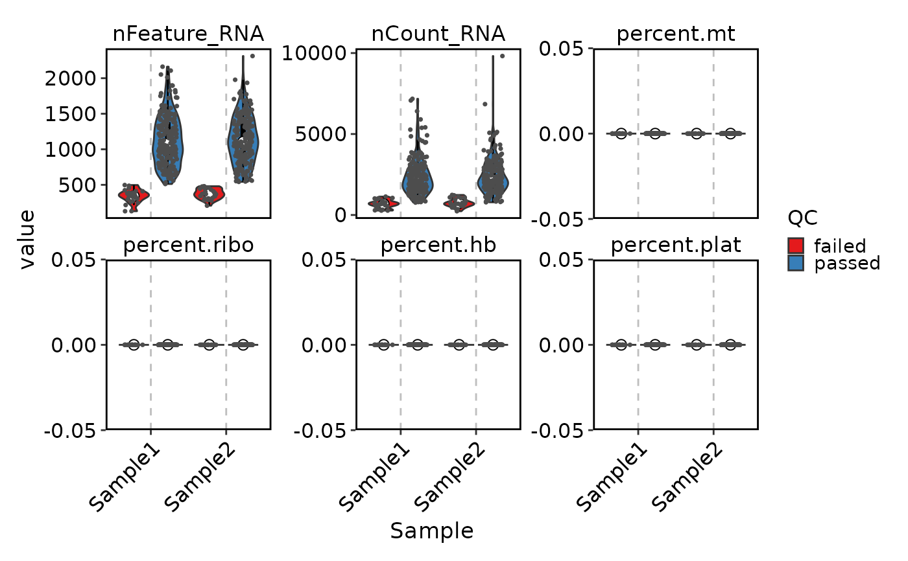
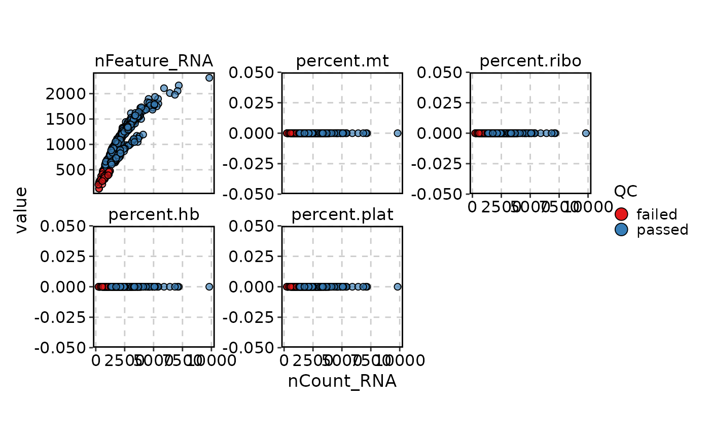
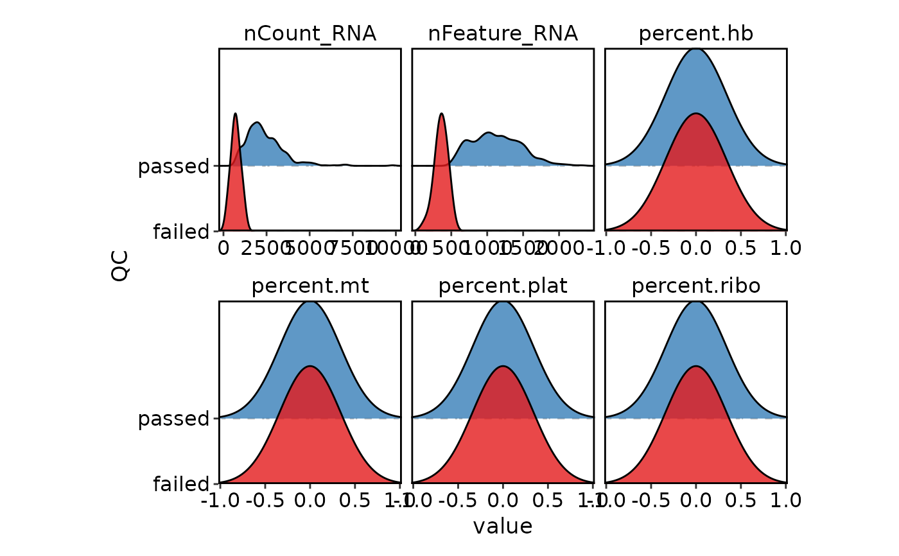
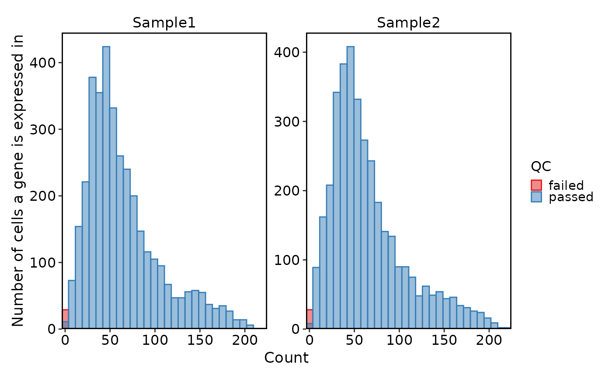
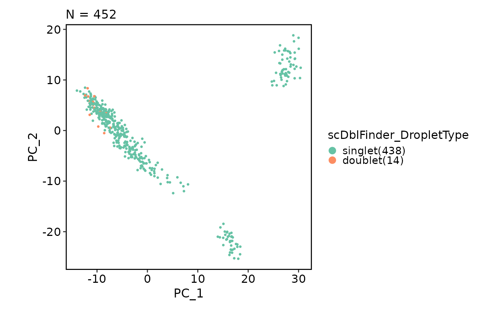
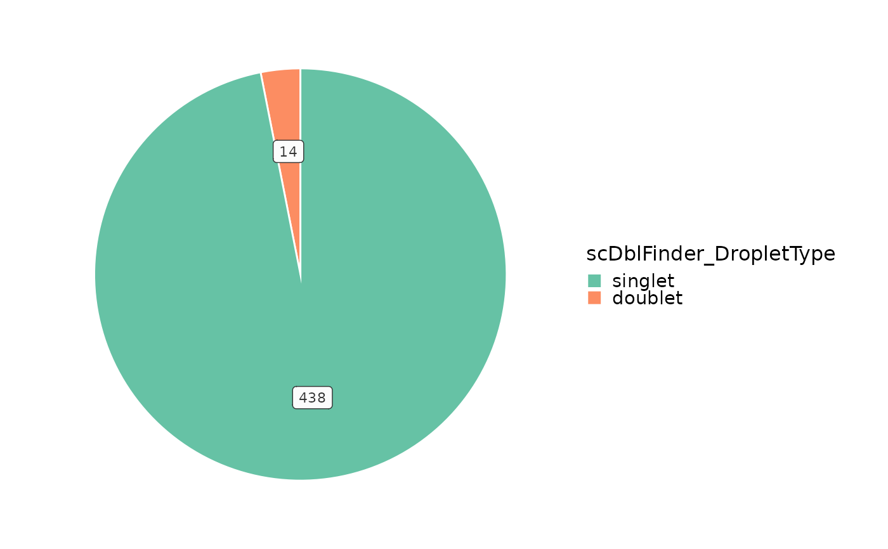

Visualize detected doublets
Usage
VizSeuratDoublets(
object,
plot_type = c("dim", "pie", "pk", "pK"),
palette = "Set2",
...
)Arguments
- object
A Seurat object with detected doublets
- plot_type
Type of plot to generate One of 'dim', 'pie', 'pk', 'pK'. dim/pie show the distribution of doublets by droplet type. pk/pK show the relationship between BC metric and pK when using DoubletFinder.
- palette
Color palette to use
- ...
Additional arguments to pass to the plot function
For 'dim', additional arguments to pass to scplotter::CellDimPlot
For 'pie', additional arguments to pass to plotthis::PieChart
For 'pk' or 'pK', additional arguments to pass to plotthis::LinePlot
Examples
# \donttest{
datadir <- system.file("extdata", "scrna", package = "biopipen.utils")
meta <- data.frame(
Sample = c("Sample1", "Sample2"),
RNAData = c(
file.path(datadir, "Sample1"),
file.path(datadir, "Sample2")
)
)
obj <- LoadSeuratAndPerformQC(meta, cache = FALSE, gene_qc = list(min_cells = 3),
cell_qc = "nFeature_RNA > 500")
#> INFO [2026-02-08 01:22:51] Loading each sample ...
#> INFO [2026-02-08 01:22:51] - Loading Sample1 and performing QC ...
#> INFO [2026-02-08 01:22:51] - Loading Sample2 and performing QC ...
#> INFO [2026-02-08 01:22:52] Merging samples ...
VizSeuratCellQC(obj)

VizSeuratCellQC(obj, plot_type = "scatter")

VizSeuratCellQC(obj, plot_type = "ridge")
#> Picking joint bandwidth of 61.9
#> Picking joint bandwidth of 177
#> Picking joint bandwidth of 0.341
#> Picking joint bandwidth of 0.341
#> Picking joint bandwidth of 0.341
#> Picking joint bandwidth of 0.341
#> Picking joint bandwidth of 61.9
#> Picking joint bandwidth of 177
#> Picking joint bandwidth of 0.341
#> Picking joint bandwidth of 0.341
#> Picking joint bandwidth of 0.341
#> Picking joint bandwidth of 0.341

VizSeuratGeneQC(obj)
#> Using `bins = 30`. Pick better value with `binwidth`.

obj <- RunSeuratTransformation(obj)
#> INFO [2026-02-08 01:22:56] Performing data transformation and scaling ...
#> INFO [2026-02-08 01:22:56] - Running NormalizeData ...
#> Normalizing layer: counts.Sample1
#> Normalizing layer: counts.Sample2
#> INFO [2026-02-08 01:22:58] - Running FindVariableFeatures ...
#> Finding variable features for layer counts.Sample1
#> Finding variable features for layer counts.Sample2
#> INFO [2026-02-08 01:22:59] - Running ScaleData ...
#> Centering and scaling data matrix
#> INFO [2026-02-08 01:23:01] - Running RunPCA (npcs=50) ...
#> PC_ 1
#> Positive: ENSG00000091513, ENSG00000171766, ENSG00000123560, ENSG00000230885, ENSG00000172005, ENSG00000173786, ENSG00000013297, ENSG00000174607, ENSG00000168314, ENSG00000105695
#> ENSG00000167641, ENSG00000136541, ENSG00000103089, ENSG00000184221, ENSG00000197971, ENSG00000197430, ENSG00000139433, ENSG00000115290, ENSG00000159176, ENSG00000120913
#> ENSG00000188643, ENSG00000134198, ENSG00000130429, ENSG00000205116, ENSG00000104267, ENSG00000102934, ENSG00000148180, ENSG00000127920, ENSG00000169562, ENSG00000189058
#> Negative: ENSG00000128683, ENSG00000074317, ENSG00000102804, ENSG00000143153, ENSG00000197457, ENSG00000132639, ENSG00000133169, ENSG00000213190, ENSG00000139970, ENSG00000213760
#> ENSG00000101489, ENSG00000125869, ENSG00000122952, ENSG00000151778, ENSG00000152954, ENSG00000182698, ENSG00000105649, ENSG00000162188, ENSG00000170004, ENSG00000104490
#> ENSG00000168081, ENSG00000115738, ENSG00000128739, ENSG00000170091, ENSG00000220205, ENSG00000250479, ENSG00000100092, ENSG00000273079, ENSG00000157152, ENSG00000152932
#> PC_ 2
#> Positive: ENSG00000109846, ENSG00000105290, ENSG00000104833, ENSG00000088986, ENSG00000168314, ENSG00000134198, ENSG00000172005, ENSG00000132718, ENSG00000088832, ENSG00000013297
#> ENSG00000115290, ENSG00000230885, ENSG00000167641, ENSG00000136541, ENSG00000184221, ENSG00000103089, ENSG00000174607, ENSG00000149557, ENSG00000197430, ENSG00000151552
#> ENSG00000205116, ENSG00000108387, ENSG00000104267, ENSG00000173786, ENSG00000015592, ENSG00000123560, ENSG00000198892, ENSG00000102934, ENSG00000188643, ENSG00000159176
#> Negative: ENSG00000163131, ENSG00000159189, ENSG00000049860, ENSG00000169313, ENSG00000173372, ENSG00000173369, ENSG00000110876, ENSG00000158869, ENSG00000101439, ENSG00000171659
#> ENSG00000011600, ENSG00000183160, ENSG00000095970, ENSG00000162511, ENSG00000182578, ENSG00000168329, ENSG00000051523, ENSG00000206428, ENSG00000143226, ENSG00000100600
#> ENSG00000273686, ENSG00000113140, ENSG00000110057, ENSG00000166428, ENSG00000116774, ENSG00000258818, ENSG00000117984, ENSG00000112799, ENSG00000213316, ENSG00000226248
#> PC_ 3
#> Positive: ENSG00000134419, ENSG00000138326, ENSG00000145592, ENSG00000142534, ENSG00000177600, ENSG00000196262, ENSG00000110700, ENSG00000158869, ENSG00000173369, ENSG00000163131
#> ENSG00000173372, ENSG00000110876, ENSG00000159189, ENSG00000197958, ENSG00000011600, ENSG00000128245, ENSG00000142541, ENSG00000183160, ENSG00000113140, ENSG00000171659
#> ENSG00000182578, ENSG00000169313, ENSG00000114391, ENSG00000049860, ENSG00000162511, ENSG00000095970, ENSG00000168329, ENSG00000273686, ENSG00000051523, ENSG00000171858
#> Negative: ENSG00000139182, ENSG00000132718, ENSG00000092096, ENSG00000197106, ENSG00000111897, ENSG00000172247, ENSG00000181790, ENSG00000174437, ENSG00000101438, ENSG00000101180
#> ENSG00000143153, ENSG00000187957, ENSG00000185818, ENSG00000105409, ENSG00000135472, ENSG00000163536, ENSG00000071553, ENSG00000180155, ENSG00000163399, ENSG00000157087
#> ENSG00000063015, ENSG00000179218, ENSG00000152583, ENSG00000069667, ENSG00000171951, ENSG00000179222, ENSG00000176884, ENSG00000168081, ENSG00000164742, ENSG00000154096
#> PC_ 4
#> Positive: ENSG00000172809, ENSG00000087258, ENSG00000161016, ENSG00000233927, ENSG00000145592, ENSG00000161970, ENSG00000142541, ENSG00000182899, ENSG00000170027, ENSG00000173376
#> ENSG00000198918, ENSG00000138326, ENSG00000189056, ENSG00000106244, ENSG00000171858, ENSG00000118432, ENSG00000146676, ENSG00000132535, ENSG00000048740, ENSG00000176788
#> ENSG00000175352, ENSG00000114391, ENSG00000134419, ENSG00000122026, ENSG00000143195, ENSG00000166441, ENSG00000110076, ENSG00000174444, ENSG00000138650, ENSG00000233954
#> Negative: ENSG00000166922, ENSG00000099797, ENSG00000117410, ENSG00000136156, ENSG00000110651, ENSG00000182636, ENSG00000182698, ENSG00000111716, ENSG00000128463, ENSG00000143198
#> ENSG00000102471, ENSG00000184277, ENSG00000116459, ENSG00000014641, ENSG00000062716, ENSG00000134333, ENSG00000152583, ENSG00000120885, ENSG00000144746, ENSG00000115310
#> ENSG00000080824, ENSG00000277791, ENSG00000005022, ENSG00000123395, ENSG00000151366, ENSG00000075415, ENSG00000137267, ENSG00000166736, ENSG00000140740, ENSG00000163479
#> PC_ 5
#> Positive: ENSG00000117984, ENSG00000179218, ENSG00000158869, ENSG00000100600, ENSG00000136156, ENSG00000030582, ENSG00000011600, ENSG00000173372, ENSG00000182578, ENSG00000168329
#> ENSG00000173369, ENSG00000101160, ENSG00000163131, ENSG00000109861, ENSG00000113140, ENSG00000027697, ENSG00000185896, ENSG00000226248, ENSG00000051523, ENSG00000183160
#> ENSG00000116774, ENSG00000224156, ENSG00000135919, ENSG00000089157, ENSG00000064601, ENSG00000278032, ENSG00000110876, ENSG00000128564, ENSG00000118705, ENSG00000159189
#> Negative: ENSG00000182698, ENSG00000178531, ENSG00000213190, ENSG00000100442, ENSG00000109270, ENSG00000188730, ENSG00000128739, ENSG00000175854, ENSG00000173915, ENSG00000102981
#> ENSG00000127540, ENSG00000102804, ENSG00000261857, ENSG00000113387, ENSG00000160213, ENSG00000157470, ENSG00000172809, ENSG00000174871, ENSG00000240972, ENSG00000112304
#> ENSG00000109846, ENSG00000090263, ENSG00000214736, ENSG00000145335, ENSG00000160194, ENSG00000152954, ENSG00000204856, ENSG00000161970, ENSG00000272835, ENSG00000169249
obj <- RunSeuratIntegration(obj)
#> INFO [2026-02-08 01:23:02] Performing data integration ...
#> INFO [2026-02-08 01:23:02] - Running IntegrateLayers (method = rpca) ...
#> Computing within dataset neighborhoods
#> Finding all pairwise anchors
#> Projecting new data onto SVD
#> Projecting new data onto SVD
#> Finding neighborhoods
#> Finding anchors
#> Found 261 anchors
#> Merging dataset 2 into 1
#> Extracting anchors for merged samples
#> Finding integration vectors
#> Finding integration vector weights
#> Integrating data
#> INFO [2026-02-08 01:23:06] - Joining layers ...
obj <- RunSeuratDoubletDetection(obj, tool = "scDblFinder", filter = FALSE)
#> INFO [2026-02-08 01:23:06] Running doublet detection using scDblFinder ...
#> Assuming the input to be a matrix of counts or expected counts.
#> Creating ~1500 artificial doublets...
#> Dimensional reduction
#> Evaluating kNN...
#> Training model...
#> iter=0, 24 cells excluded from training.
#> Warning: Passed invalid function arguments: max_depth, eval_metric, tree_method, subsample, nthread, eta. These should be passed as a list to argument 'params'. Conversion from argument to 'params' entry will be done automatically, but this behavior will become an error in a future version.
#> Warning: Parameter(s) have been removed from this function: label. This warning will become an error in a future version.
#> iter=1, 24 cells excluded from training.
#> Warning: Passed invalid function arguments: max_depth, eval_metric, tree_method, subsample, nthread, eta. These should be passed as a list to argument 'params'. Conversion from argument to 'params' entry will be done automatically, but this behavior will become an error in a future version.
#> Warning: Parameter(s) have been removed from this function: label. This warning will become an error in a future version.
#> iter=2, 24 cells excluded from training.
#> Warning: Passed invalid function arguments: max_depth, eval_metric, tree_method, subsample, nthread, eta. These should be passed as a list to argument 'params'. Conversion from argument to 'params' entry will be done automatically, but this behavior will become an error in a future version.
#> Warning: Parameter(s) have been removed from this function: label. This warning will become an error in a future version.
#> Threshold found:0.53
#> 12 (2.7%) doublets called
VizSeuratDoublets(obj)

VizSeuratDoublets(obj, plot_type = "pie")

# }